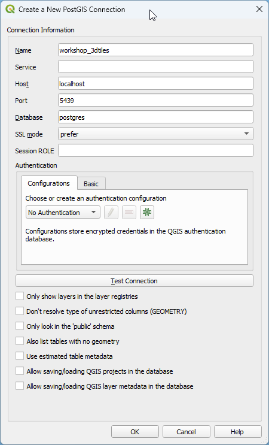

Geef je data diepte:
van 2D naar 3D met OS tools
Workshop 3D Tiles · 28 maart 2025
Even voorstellen
Spreker 1
Functie: 3D GIS Specialist
Organisatie: [Organisatie]
Email: [Email]
Spreker 2
Functie: Digital Twin Expert
Organisatie: [Organisatie]
Email: [Email]
Programma
- Introductie 3D Tiles
- Deel 1: Dataverwerking tot 3D Tiles
- Data downloaden en importeren
- Data voorbereiden
- 3D Tiles maken
- Deel 2: Datavisualisatie in 3D
- 3D tilesets inladen
- Tileset stijl aanpassen
- 3D modellen toevoegen
- PDOK 3D Basisvoorziening
- 3D Tiles in QGIS inladen
3D Tiles: een OGC standaard
- Open standaard voor het visualiseren van grote 3D datasets
- Ontwikkeld door Cesium en gestandaardiseerd door OGC
- Hiërarchische datastructuur (spatial tiling)
- Ondersteunt verschillende formaten:
- b3dm - Batched 3D Models
- i3dm - Instanced 3D Models
- pnts - Point Clouds
- cmpt - Composite

Zie voor een gedetailleerd overzicht van de 3D Tiles specificatie: 3D Tiles Reference Card
Waarom zijn 3D Tiles nuttig?
- Optimalisatie voor grote datasets
- Alleen de noodzakelijke data wordt ingeladen
- Level of Detail (LOD) mechanisme
- Interoperabiliteit
- Open standaard
- Ondersteund door verschillende viewers (Cesium, QGIS, etc.)
- Streaming van 3D content
- Progressief laden van data
- Efficiënt voor web-based toepassingen
- Styling mogelijkheden
- 3D Tiles Styling Language
Doel van vandaag
Na het voltooien van deze workshop:
- Is er kennis van de 3D Tiles-standaard
- Is er inzicht in de software en technieken die nodig zijn voor het maken van 3D-tilesets
- Kan een 3D-tileset worden geladen in een CesiumJS-webomgeving
- Zijn de mogelijkheden voor datavisualisatie met CesiumJS bekend
Benodigdheden
- Laptop met internetverbinding
- Docker
- QGIS (met GDAL commandline tools)
- Database management tool (pgAdmin of DBeaver)
- Node.JS
Digital Twins
- Digitale kopie van de fysieke werkelijkheid
- Brengt data uit verschillende bronnen samen
- In deze workshop: digital twin van de fysieke leefomgeving
- Focus op de 3D component
- Casus: Proefpolderdijk bij Andijk
Database opzetten met Docker
docker run -d -e POSTGRES_PASSWORD=postgres -d -p 5439:5432 postgis/postgisConnectie instellingen:
- Host: localhost
- Port: 5439
- Username: postgres
- Password: postgres
DBeaver connectie:

QGIS connectie:
Deel 1: Dataverwerking tot 3D Tiles
In dit deel gaan we:
- DTB data downloaden en importeren
- Data voorbereiden in PostgreSQL
- 3D Tiles maken van DTB vlakken (b3dm)
- 3D Tiles maken van DTB punten (i3dm)
- Tilesets valideren en comprimeren
We gebruiken het Digitaal Topografisch Bestand (DTB) van Rijkswaterstaat als brondata.
Data downloaden en importeren
- Zoek via de RWS DTB Bladindeling viewer het Andijk kaartblad (DTB kaartblad d15cz)
- Download de data (d15cz.zip)
- Bekijk de inhoud met GDAL:
ogrinfo /vsizip/d15cz.zipDe zip bevat 3 shapefiles:
- d15cz_lin.shp (DTB lijnen)
- d15cz_reg.shp (DTB vlakken)
- d15cz_sym.shp (DTB punten)

Data importeren in PostgreSQL
Voor het laden van de DTB vlakken:
ogr2ogr -f "PostgreSQL" PG:"host=localhost port=5439 user=postgres dbname=postgres password=postgres" /vsizip/d15cz.zip/d15cz_reg.shp -t_srs epsg:4979 -nln public.dtb_vlak_andijk -nlt MULTIPOLYGONZVoor het laden van de DTB punten:
ogr2ogr -f "PostgreSQL" PG:"host=localhost port=5439 user=postgres dbname=postgres password=postgres" /vsizip/d15cz.zip/d15cz_sym.shp -t_srs epsg:4979 -nln public.dtb_punt_andijk -nlt POINTZControleer of de data goed geladen is:
SELECT count(*) from public.dtb_punt_andijk;
SELECT count(*) from public.dtb_vlak_andijk;Data voorbereiden
Maak ruimtelijke indexen aan:
CREATE INDEX ON public.dtb_vlak_andijk USING gist(st_centroid(st_envelope(wkb_geometry)));
CREATE INDEX ON public.dtb_punt_andijk USING GIST (wkb_geometry);Maak een database view voor de punten (bomen):
CREATE or replace view public.v_dtb_punt_andijk AS
SELECT
RANDOM()*360 AS rotation,
(RANDOM()*1.5)+0.5 AS scale,
json_build_array(json_build_object('dtb id',dtb_id),
json_build_object('omschrijving',omschr),
json_build_object('datum',datum)) AS tags,
'tree.glb' AS model,
wkb_geometry AS geom
FROM public.dtb_punt_andijk
WHERE omschr = 'Boom';QGIS visualisatie
DTB vlakken in QGIS:

DTB punten (bomen) in QGIS:

3D Tiles maken van DTB vlakken
- Download pg2b3dm (voor Windows kies pg2b3dm-win-x64.zip)
- Pak het zip-bestand uit en kopieer de executable naar de werkdirectory
- Check de versie:
pg2b3dm --versionVoer het volgende commando uit:
pg2b3dm -U postgres -h localhost -p 5439 -d postgres -t public.dtb_vlak_andijk -a dtb_id,omschr,datum --use_implicit_tiling false -o ./dtb_vlakken -c wkb_geometry --create_gltf falseResultaat: een tileset.json bestand en een directory 'content' met de 3D tiles in b3dm formaat.
3D Tiles maken van DTB punten
- Download i3dm.export
- Unzip het bestand en kopieer i3dm.export.exe naar de werkdirectory
- Kopieer het boom model tree.glb naar de werkdirectory
- Check de versie:
i3dm.export --versionVoer het volgende commando uit:
i3dm.export -c "Host=localhost;Username=postgres;Password=postgres;Database=postgres;Port=5439" -t public.v_dtb_punt_andijk -o ./dtb_punten --use_i3dm trueResultaat: een tileset.json bestand, een directory 'content' met de 3D tiles in i3dm formaat, en een subtree folder.

Valideren tilesets
Installeer de 3D Tiles Validator:
npm install -g 3d-tiles-validatorValideer de tilesets:
3d-tiles-validator --tilesetFile ./dtb_vlakken/tileset.json
3d-tiles-validator --tilesetFile ./dtb_punten/tileset.jsonComprimeer de tilesets voor betere performance:
docker run -v c:\workshop_3dtiles\dtb_vlakken\content:/tiles -it geodan/compressor5000Vraag: Hoeveel keer is de dataset kleiner geworden?
Vraag: Waarom comprimeren we alleen de vlakken en niet de punten?
Deel 2: Datavisualisatie in 3D
In dit deel gaan we:
- Een webserver opzetten
- 3D Tiles inladen in Cesium Viewer
- Tileset stijlen aanpassen
- 3D modellen toevoegen
- 3D Basisvoorziening gebruiken
- 3D Tiles in QGIS inladen
Server opzetten
Installeer http-server:
npm install -g http-serverStart de server:
http-serverOpen een webbrowser en ga naar http://localhost:8080
Cesium Viewer
Kopieer bestand index.html uit de 3D Tiles workshop repository naar de werkdirectory.
In de code worden 3 tilesets geladen:
- DTB Vlakken: ./dtb_vlakken/tileset.json
- DTB punten: ./dtb_punten/tileset.json
Open een browser en ga naar http://localhost:8080/cesium-viewer.html
De Cesium viewer bevat een aantal kaartlagen:
- PDOK BRT achtergrondkaart
- 3D Basisvoorziening - Digitaal Terreinmodel (DTM)
Tileset stijlen aanpassen
Styling kan worden toegepast op twee manieren:
- Tijdens het genereren van de tileset
- Via de index.html file
Voeg de volgende code toe aan de tileset van de DTB vlakken:
tilesetDtbVlakken.style = new Cesium.Cesium3DTileStyle({
color: {
conditions: [
["${feature['osmchr']} === 'Bitumen'", "color('#430719')"],
["${feature['omschr']} === 'Steen bekleding'", "color('#740320')"],
["${feature['omschr']} === 'Bomen en struiken'", "color('#008000')"],
["${feature['omschr']} === 'Industrieterrein'", "color('#FFFF00')"]
// todo: add more conditions
]
}
});Opdracht: maak features waar omschr === 'Meer' blauw.
3D modellen toevoegen
Kopieer het 3D model windturbine.glb naar de werkdirectory.
Voeg de volgende code toe aan index.html:
const windturbine = viewer.entities.add({
position: Cesium.Cartesian3.fromDegrees(5.193486,52.754867),
model: {
uri: "windturbine.glb"
},
});

3D Basisvoorziening
In de 3D Basis voorziening van PDOK zijn landelijke 3D Tilesets beschikbaar.
Voeg de 3D gebouwen tileset toe aan de Cesium Viewer:
const tileset3DGebouwen = await Cesium.Cesium3DTileset.fromUrl(
"https://api.pdok.nl/kadaster/3d-basisvoorziening/ogc/v1_0/collections/gebouwen/3dtiles"
);
viewer.scene.primitives.add(tileset3DGebouwen);QGIS 3D Tiles
- Open QGIS en ga naar 'Layer' -> 'Data Source Manager' -> 'Scene'
- Zet 'Source Type' op 'Service'
- Maak een nieuwe connectie aan via 'New' -> 'New Cesium 3D Tiles Connection'
- Name: panden
- URL: http://localhost:8080/andijk_panden/tileset.json

QGIS 3D Tiles visualisatie
2D weergave in QGIS:

Vraag: Waarom bestaan alle panden uit driehoeken?
3D weergave in QGIS:

Wat valt er op aan de 3D View in QGIS?
Afsluiting
Wat hebben we geleerd?
- Kennis van de 3D Tiles-standaard
- Inzicht in de software en technieken voor het maken van 3D-tilesets
- Een 3D-tileset laden in een CesiumJS-webomgeving
- Mogelijkheden voor datavisualisatie met CesiumJS
Vragen?
Bronnen en links
- 3D Tiles specificatie
- 3D Tiles Reference Card
- pg2b3dm - Tool voor het maken van b3dm tilesets
- i3dm.export - Tool voor het maken van i3dm tilesets
- 3D Tiles Validator
- CesiumJS
- PDOK 3D Basisvoorziening